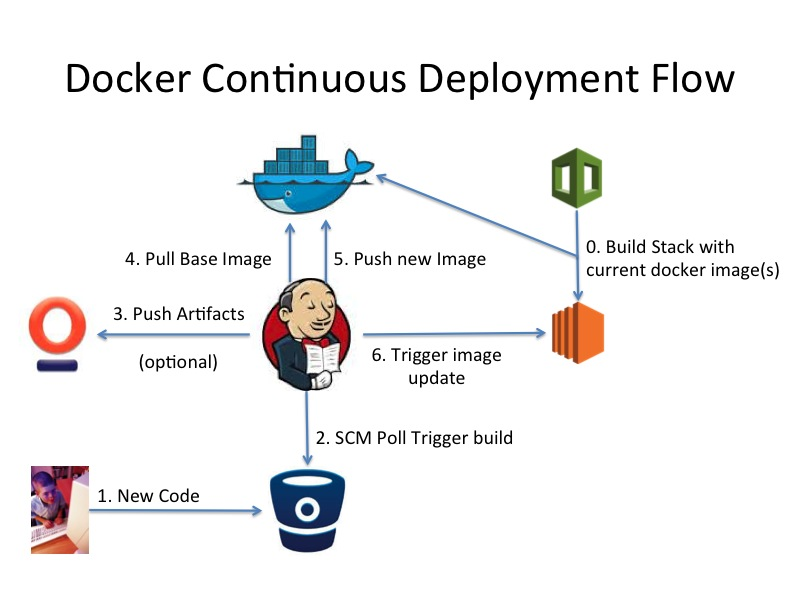
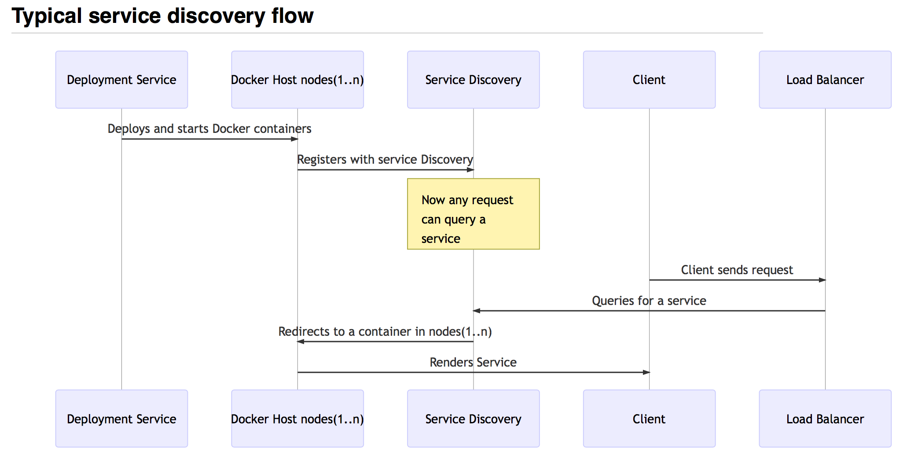

Docker
Or how I learned to love containersMax Alcala
@maxarturoasmalcala@shoppertrak.com
Oh, Docker
What is it anyway?
Docker is:
- An abstraction mechanism for code
- Self contained - runtime, system libraries, dependencies
- Immutable - a snapshot of your software, all the way down to the OS
- Highly portable - runs on any host that can run Docker
- Composable - start with a base and make it your own (or shamelessly take other's work)

Docker containers wrap up a piece of software in a complete filesystem that contains everything it needs to run: code, runtime, system tools, system libraries – anything you can install on a server. This guarantees that it will always run the same, regardless of the environment it is running in.
Wait What
How is this even different from a vm
Docker vs VM
- A VM emulates the entire stack of a computer, from the low-level networking to filesystem operation
- Docker shares the kernel with the host OS, while still maintaining isolation of the Docker-ized software
- This gives it *much* better performance compared to a VM
But wait, there's more!
Docker as version control
diff of filesystem changes from one layer to the next.
what this means: Development
- Developer onboarding is silly fast
- Zero environment inconsistencies
- Use the right tool for the job always - Don't worry about dependencies/library conflicts
what this means: Ops/Prod Support
- Deployment and rollback is standardized across *all* applications - deploy latest image for release, deploy a previous image for rollback
- Removes complexity from Continuous Integration
- Applications with very different requirements can coexist and share resources on the same host
- Corollary: Reduced cloud hosting costs ($$)
None of this

Thats crazy
Who is actually using this in production?
Let's see it in action!
A short demo
How does this work in production?
Some Docker lingo
- Docker host: the bare metal (where you have your apps running)
- Docker image: The packaged bundle of your code/dependencies/os requirements
- Docker container: the actual running instance of your image
A typical development/CI workflow
Deploying in production - Service discovery
Deployment tools
- Distributed systems (Apache Mesos, Kubernetes, Docker Swarm)
- Abstracts containers and lets you deploy against a pool of resources
- More upfront setup, but auto scales/configures/checks health of your containers
- Traditional deployment (Chef, Puppet, Jenkins, TeamCity...)
- Grabs docker images and runs them on your machines, no frills
- Less complicated, but you're on the hook for keeping track of your container allocation/health
I'm still not convinced
Give me more crazy things I can do with Docker
More crazy docker things
Any questions?